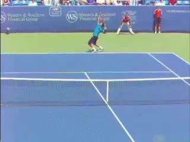
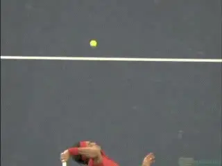
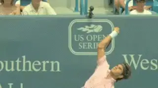
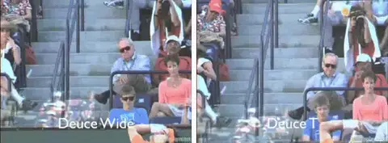
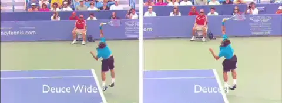
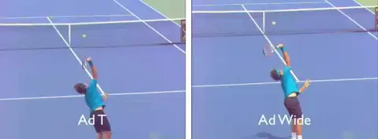
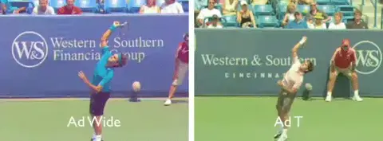
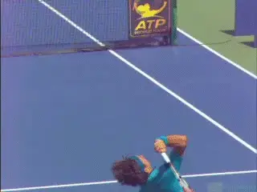

Federer Serve Locations: 2nd Serve¶
John Yandell¶

How do top players develop the ability to place the ball to the corners on second serve?
In the last two articles in this series, we looked at the technical variations in Roger Federer's serve for the different placements for the first serve in both the ad court (link) and in the deuce court (link). We saw that there were slight differences in the angle and path of the racket face that were invisible to the eye, but that were clear in TPA high speed video.
[On the first serve, the key is the timing of the rotation of the hand and arm in the upward swing. This rotation in turn varies the angle of the racket head at contact, creating placements to both corners and everywhere in between.]
[The same factor--the timing of the rotation of the racket--and the resulting angle at contact explain the placement on the second serves as well.] So let's see how that works in both courts.
Toss
Before we do though let's review a key difference between the first and second serve, the placement of the toss. We looked at the differences in the ball position between the first and second serve in my recent series on new methods for building or improving your strokes (link). And we did the same in the classic series on the Sampras serve from 10 years ago. (link.)

On the second serve the toss moves to the player's left and slightly backwards.
The difference is that on a second serve the toss is further to the player's left, and also slightly further back. From behind, the contact for top players appears to be somewhere between the edge and the middle of the head.
From the side, the contact is at most a few inches behind the front edge of the face. This ball position naturally changes the path of the upward swing, making the racket path more vertical as it approaches the ball.
This change in racket trajectory on the second serve generates up to twice as much spin as on a first serve. Federer for example averages about 2000rpm on his first serve, but has recorded second serves up to almost 5000rpm.
The Fundamental Mechanism
Despite the differences in toss and spin, the fundamental mechanism for controlling the shot direction remains the same as on the first serve. This is the timing of the hand and arm rotation. This controls the rotation of the racket and the exact angle of the racket face at contact.
As with the first serve, the racket face on the second serve turns over a total of about 180 degrees in the course of the upward swing and followthrough. It rotates about 90 degrees from the racket drop to the contact, and then another 90 degrees or so in the followthrough, until the racket face is roughly on edge with the court.
This is commonly called pronation. But pronation in the accurate technical sense is not a factor. Pronation refers biomechancially to the independent rotation of the forearm at the elbow.

Watch the elbow to see how the rotation of the upper arm drives the motion.
The rotation of the racket in the upward swing is actually driven by the rotation of the upper arm in the shoulder joint. This rotation begins as the racket head is rising and continues into the followthrough as the racket turns over.
The simplest way to describe it is as a unitary rotation of the hand arm and racket driven from the shoulder. This rotation of the upper arm starts while the arm is straightening from the elbow.
[Once the arm straightens it continues to the contact and after, with the arm and racket in a virtual straight line moving out into the followthrough.]
It's the timing of this unitary rotation that controls the angle of the racket face and therefore the direction of the serve. So let's see specifically how this works for the second serve in both courts.
Deuce Court
Although the ball toss has moved back and to the players left on the second ball, the direction is still controlled in the same way.

Compare the timing of the rotation of the racket head into contact.
On the serve to the T, Federer starts the rotation of the racket head a fraction of a second sooner compared to the serve out wide. This means that the racket face squares more to the ball at contact.
This rotation is slightly delayed on the serve wide. The racket face rotates less iat contact and strikes the ball at angle facing in the direction of the shot.
These differences are slight and impossible to see with the human eye. At 500 frames per second they are perceptible, but still difficult to see even with that much video information.
The difference is actually in the neighborhood of one or two hundredths of a second. No wonder players have trouble placing the ball accurately to the corners.
Followthrough
On both placements, the hand and arm rotation continues in the followthrough. But look at the differences in the angle of the arm to the baseline. These indicate the small differences in the path of the racket forward and to the side.
Because the arm rotation is delayed on the wide serve with the racket face angle slightly open at contact, the path of the racket is moves a little more forward toward the net.

Now compare the angle of the arm moving across the baseline as the rotation completes.
Compare this to the serve down the T in which the face has rotated further sooner and is closer to square at contact. Now at the end of the rotation the arm has moved slightly further to the right.
Ad Court
[In the ad court the same principle applies in controlling the placement. As with the deuce court, the total hand and arm rotation is about the same on both the wide serve and the serve down the T. The timing of that rotation is what varies to control the angle of the racket face at contact.]
[Going down the T in the ad court, the racket turns later and will be close to square at contact. Going wide, the racket turns a little sooner and a few degrees further, so the face is angled in the direction of the wider ball flight.]
Look at Federer and see that on the serve down the T that the face is still mostly on edge until a few hundredths of a second before contact. On the wide serve the rotation has progressed further with the racket face starting to square up to the ball a few hundredths of a second sooner.

On the T serve the racket face turns later compared to the wide serve.
Now watch the path of the followthrough. The differences are more dramatic than in the deuce court. On the serve down the T the arm and racket definitely move to the server's right, but they also move slightly more forward.
On the wide serve, the arm and racket travel on a path that is further to the right. When the racket has turned over fully on the wide serve, the arm is much closer to reaching parallel to the baseline.
Because these motions happen so fast, these differences are difficult or impossible to see with the naked eye. The miracle of high speed video is that it allows us to see them slowly and with a high frame rate so the entire motion is clear.
Executing Yourself

The differences in the angle of the arms crossing the baseline on the corner serves in the ad court.
Understanding all this is fascinating, but the next question is how to actually create these small differences consistently and develop these placements? The video is the key, because it allows you to create images of the differences in the positions at the critical moments.
First you have to develop the image of the complete hand and arm rotation from the drop to the followthrough. Then you can create images for the key positions for the variations in the individual serves.
Deuce Court
The key to second serve control: visualize the hand and arm rotation, the angle of the racket face at contact, and the angle of the arm going across the baseline.
For the wide serve in the deuce court visualize that slightly open racket face angle as your hand and racket move through the contact. Then visualize the image of the arm and racket continuing to fully rotate, but also moving forward, so the arm is slightly to the right of perpendicular with the baseline.
For the serve down the T, visualize turning the racket face further sooner so that the face is more square with the ball. Then imagine that as the rotation continues, the arm and racket cross the baseline moving slightly more directly forward than on the wide delivery.
Ad Court

The key to second serve control: visualize the hand and arm rotation, the angle of the racket face at contact, and the angle of the arm going across the baseline.
For the T serve in the ad court, imagine the face turning almost square to the ball, but the arm continuing more directly outward in the followthrough. For the wide serve, the image should be of the racket face turning harder, further and sooner, and of the arm continuing more radically to your right.
If you have struggled with accuracy on your serve placements you now have the magic keys that we unlock only here through our video resources. Stay tuned for more adventures in the mysteries of pro technique and how to apply it to your game!

John Yandell is widely acknowledged as one of the leading videographers and students of the modern game of professional tennis. His high speed filming for Advanced Tennis and TPA have provided new visual resources that have changed the way the game is studied and understood by both players and coaches. He has done personal video analysis for hundreds of high level competitive players, including Justine Henin-Hardenne, Taylor Dent and John McEnroe, among others.
In addition to his role as Editor of TPA he is the author of the critically acclaimed book Visual Tennis. The John Yandell Tennis School is located in San Francisco, California.